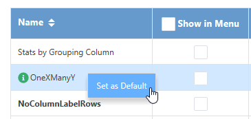

Der Dialog Neue Mappe
New-workbook-dlg
Der Dialog Neue Mappe bietet Zugriff auf Ihre Vorlagen für Arbeitsmappen, Matrixmappen und Analysen. Der Dialog listet drei Klassen von Vorlagen:
- Anwendervorlagen sind Ihre benutzerdefinierten Vorlagen und werden im Allgemeinen im Ordner <Benutzerdaten>\Dokumente\OriginLab\Anwenderdateien gespeichert.
- Erweiterte Vorlagen sind spezielle, von OriginLab für Analysen zur Verfügung gestellte Vorlagen und werden im Allgemeinen im Ordner <Benutzerdaten>\AppData\Local\OriginLab\Templates gespeichert.
- Gruppenvorlagen werden nur Anwendern angezeigt, die einen zugewiesenen Gruppenordner miteinander teilen, der Arbeits- und Matrixmappen enthält. Anderen Anwender wird das Kontrollkästchen Gruppe nicht angezeigt.
- Wählen Sie Datei > Neu: Arbeitsmappe: Durchsuchen im Hauptmenü.
 |
Bitte beachten Sie, dass der Dialog Neue Mappe nicht automatisch angezeigt wird, wenn Origin oder ein neues Projekt geöffnet wird. Dies ist ein Unterschied zum alten Dialog Neue Arbeitsmappe. Währenddessen wird das Lernzentrum immer angezeigt, wenn Sie das Kontrollkästchen Bei Start zeigen aktiviert haben.
|
| Hinweis: Das Kontrollkästchen Gruppe wird nur angezeigt, wenn Sie einen Gruppenordner angelegt und eine Arbeits-/Matrixmappe zu ihm hinzugefügt haben. |
Anwendermappen hinzufügen und alle Mappen verwalten
- Wenn Sie existierende Mappendateien zu Ihrem Anwenderdateiordner oder Gruppenordner hinzugefügt haben, können Sie auf die Schaltfläche Anwendermappe scannen
 auf der Symbolleiste klicken, um sie automatisch zu scannen.
auf der Symbolleiste klicken, um sie automatisch zu scannen.
- Um Arbeitsmappenvorlagen (*.otwu) oder Arbeitsmappenfenster-/Analysevorlagen (*.ogwu) aus einem anderen Ordner als dem Anwenderdateiordner hinzuzufügen, klicken Sie auf die Schaltfläche Mappe hinzufügen auf der Symbolleiste.
- Klicken Sie auf die Schaltfläche Verwaltungsmodus
 auf der Symbolleiste, um zur Verwaltungsliste zu wechseln. In diesem Modus können Sie
auf der Symbolleiste, um zur Verwaltungsliste zu wechseln. In diesem Modus können Sie
- die Anwendermappe aus der Ansichtsliste löschen. Bitte beachten Sie, dass Sie keine erweiterte Mappe löschen dürfen.
- einige Mappen in der Hauptansichtsliste verbergen und sie wieder zeigen. Wenn Sie eine Mappe verbergen, wird die Mappe ausgegraut und nicht mehr in der Ansichtsliste gezeigt.
- auf die Schaltfläche Nach oben & Nach unten
 im Spaltenheader klicken, um die Mappen nach Name, Mappentyp, Kategorie und Speicherort zu sortieren.
im Spaltenheader klicken, um die Mappen nach Name, Mappentyp, Kategorie und Speicherort zu sortieren.
Neue Vorlagen zum Vorlagencenter hinzufügen
OriginLab unterhält ein Online-Repository mit spezialisierten Mappen- und Diagrammvorlagen, die Sie über das Vorlagencenter herunterladen können. Mehr dazu können Sie unter Vorlagencenter lesen.
Mappen suchen und filtern
Wählen Sie eine Kategorie aus der Auswahlliste Kategorie und geben Sie eine Zeichenkette oder einen Text im Suchfeld ein, um in den Mappeninformationen zu suchen.
Sie können die Kontrollkästchen Erweitert, Anwender und Gruppe aktivieren bzw. deaktivieren, um zu entscheiden, welche Arten von Mappen in der Liste gezeigt werden.
Mehr Bedienelemente auf der Ansichtsliste
- Mappenvorschau und Dateiinformationen zeigen
- Bewegen Sie Ihre Maus über das Symbol Info vor einer Mappe. Ihnen wird die Vorschau, die Beschreibung und der Dateipfad in Form eines Tooltipps angezeigt.
- Eine Anwendermappe bearbeiten
- Klicken Sie mit der rechten Maustaste auf eine Anwendermappendatei, um Bearbeiten auszuwählen und den Dialog Bearbeiten zu öffnen, in dem Sie die Mappendatei bearbeiten können.
- Eine Mappe als Standard festlegen, wenn eine neue Arbeitsmappe oder Matrix erstellt wird
- Klicken Sie mit der rechten Maustaste auf die Mappe und wählen Sie Als Standard setzen. Die Standardvorlage für die Schaltflächen Neue Arbeitsmappe
 und Neue Matrix
und Neue Matrix  ist nun eine andere. Die aktuelle Standardvorlage ist fett, falls sie in der Ansichtsliste angezeigt wird. Sie dürfen das Standard auf der Standardvorlage löschen oder eine andere Vorlage als Standard setzen, um die Standardvorlage zu ändern.
ist nun eine andere. Die aktuelle Standardvorlage ist fett, falls sie in der Ansichtsliste angezeigt wird. Sie dürfen das Standard auf der Standardvorlage löschen oder eine andere Vorlage als Standard setzen, um die Standardvorlage zu ändern.
- 
- Fügen Sie die Mappe im Menü Datei: Neu: Arbeitsmappe/Matrix hinzu.
- Aktivieren Sie das Kontrollkästchen Im Menü zeigen hinter dem Mappenname, um zu entscheiden, ob er im Hauptmenü unter Datei: Neu: Arbeitsmappe/Matrix gezeigt wird.
- Mappen nach Kategorie oder Mappentyp filtern
- Klicken Sie auf den nach unten weisenden Pfeil neben dem Header Mappentyp, um einen Typ zum Filtern der Mappen auszuwählen.
- Mappen in der Liste sortieren
- Per Standard werden die zuletzt verwendeten Mappendateien oberhalb der Tabelle aufgeführt. Die neu hinzugefügte Mappe wird auch als zuletzt hinzugefügt betrachtet und oben mit aufgelistet. Um die aufgeführten Mappen manuell zu sortieren, klicken Sie auf die Schaltfläche Nach oben & Nach unten im Spaltenheader, um die Mappen nach Name, Mappentyp, Kategorie und Speicherort zu sortieren.